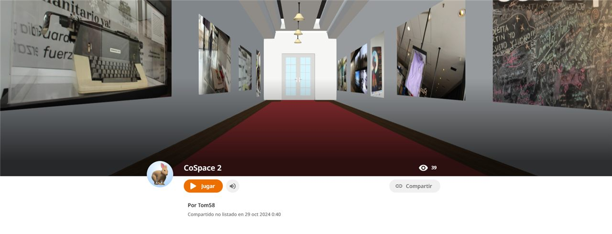

Colegio Tom Adams IED · Kennedy, Bogotá
Restauradores
de la Memoria
"Quien no conoce su historia está condenado a repetirla."
Estudiantes que investigan, narran y transforman en arte la memoria del conflicto y de su territorio, para construir paz desde la escuela.
- 0año de inicio
- 0versiones del Museo Escolar
- 0eventos registrados
- 0aliados institucionales
¿Qué es Restauradores de la Memoria?
Una escuela que recuerda, narra y resignifica
Restauradores de la Memoria es un proyecto pedagógico del Colegio Tom Adams IED que convierte el aula en un lugar de memoria. Sus estudiantes investigan los hechos del conflicto armado colombiano y la historia de su barrio, escuchan a las víctimas y a la comunidad, y transforman lo aprendido en obras, objetos, historietas, danzas y exposiciones.
Su antecedente es la exposición "Escuelas que recuerdan, narran y resignifican la guerra", presentada en la Feria del Libro de Bogotá en 2018. Desde entonces el proyecto ha crecido con el Museo Escolar de la Memoria, las salidas pedagógicas a lugares de memoria y un Museo Virtual que lleva la experiencia a cualquier pantalla.
- 01
Investigar
Testimonios, archivos y recorridos por lugares de memoria.
- 02
Narrar
Radio, cómic, cartografías y relatos del territorio.
- 03
Crear
Esculturas, tejidos, altares, teatro y danza.
- 04
Divulgar
Muestras comunitarias, exposiciones y museo virtual.
Línea del tiempo
Componente principal
Museo Escolar de la Memoria
Cada año la comunidad educativa abre un museo vivo: objetos, retratos, obras y presentaciones artísticas que honran a las víctimas y cuentan la historia del territorio. En 2025 llegó a su quinta versión con el acompañamiento del Centro Nacional de Memoria Histórica.

Museo Virtual de la Memoria
Recorre en 3D las salas del museo: fotografías de las salidas pedagógicas, la muestra comunitaria, la historieta y objetos digitalizados por los estudiantes con fotogrametría. Funciona en computador, celular y gafas de realidad virtual.
Lugares de memoria
Salidas pedagógicas
Aprender la historia caminándola. Los estudiantes recorren el Eje de la Memoria y la Paz, el Centro de Memoria, Paz y Reconciliación y otros lugares de la ciudad para escuchar, preguntar y registrar.
Calendario de la memoria
Fechas conmemorativas
Agenda
Visitas y eventos
Agenda tu visita al museo
Colegios, familias y organizaciones pueden visitar el Museo Escolar de la Memoria o inscribirse en un evento. Tu registro queda guardado en la tabla Visitantes.
Los datos se usan únicamente para organizar la visita.
Logros
Reconocimientos
Trabajo en red
Alianzas institucionales
Evidencias
Galería multimedia
Voces en la radio
Videos y enlaces
Escríbenos
Contacto
¿Quieres llevar el Museo Escolar de la Memoria a tu colegio, donar un objeto o proponer una alianza? Déjanos tu mensaje.
- Institución: Colegio Tom Adams IED
- Localidad: Kennedy, Bogotá D.C.
- Sitio web: colegiotomadams.edu.co
- Canales institucionales: Teams y Gnosoft